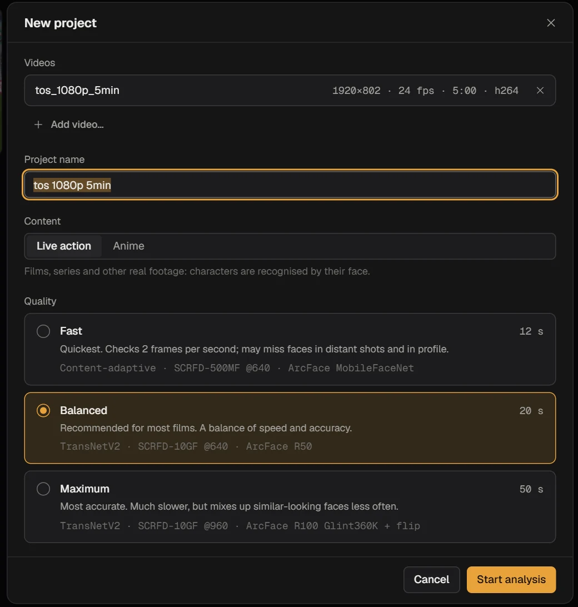
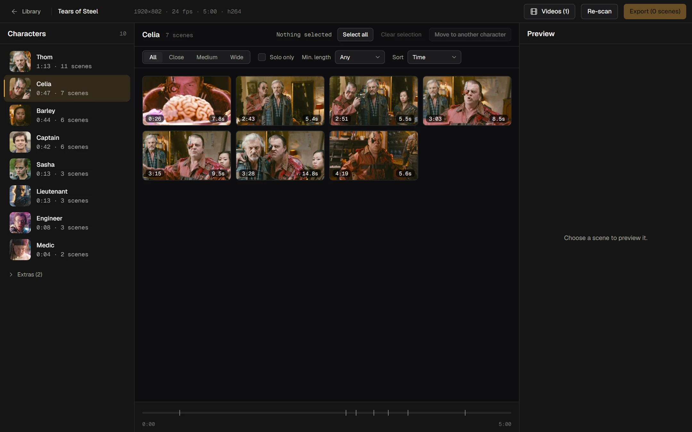
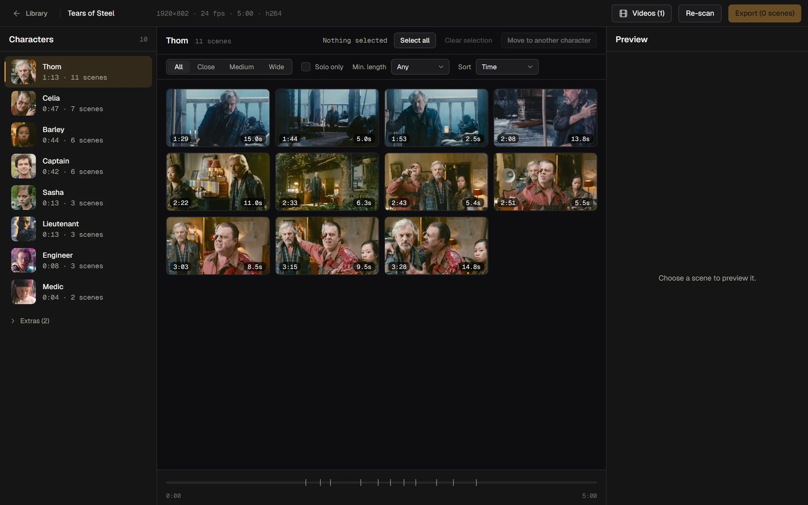
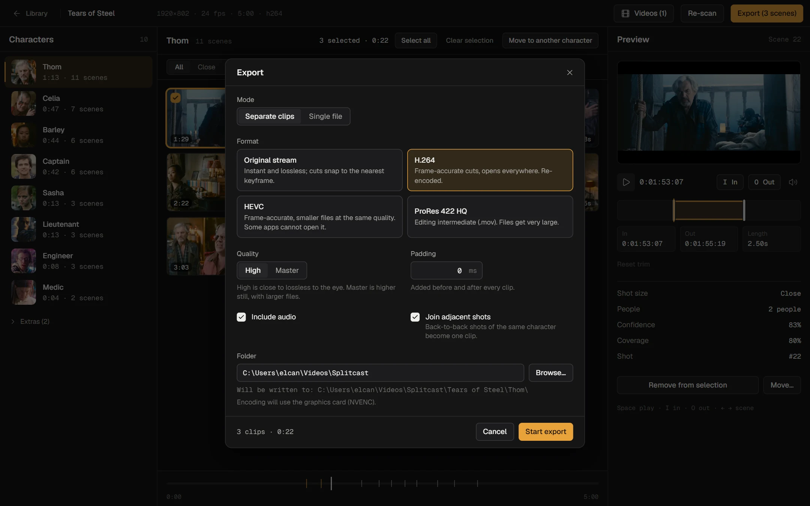
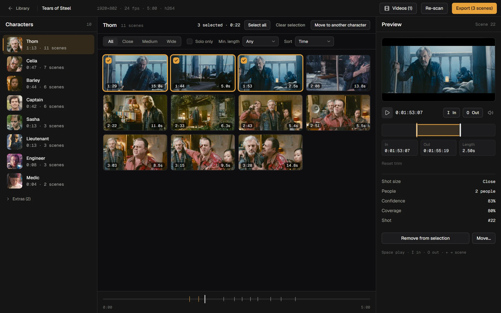

01
Drop it in
A film, an episode, or a pile of episodes. Pick Live action or Anime and one of three quality levels. Splitcast tells you roughly how long it will take before you commit.

free · open source · runs offline
Drop in a film, an episode or a whole season. Splitcast finds every person who appears, groups their shots, and exports each character’s scenes as clean clips — ready for your edit. The AI runs on your own graphics card. Nothing is uploaded.
Windows 10/11 · NVIDIA, AMD and Intel GPUs · 16 languages


Real screenshot. Footage: Tears of Steel (CC-BY, Blender Foundation).
/how-it-works
A film, an episode, or a pile of episodes. Pick Live action or Anime and one of three quality levels. Splitcast tells you roughly how long it will take before you commit.

Shots are detected, faces are tracked through each shot, and tracks are grouped into characters. Two faces in the same shot are never merged. You get a list, ranked by screen time.

Click through scenes, set In and Out to the frame, then export as separate clips or one file. Copy the original stream, or re-encode with H.264, HEVC or ProRes.

/review

/features
Add every episode to one project. A character keeps the same identity from episode to episode, so you get one scenepack per character for the whole season.
Drawn faces are a different problem. A dedicated model looks at hair, eyes and outfit instead of facial geometry.
Three quality levels. Slower means fewer mix-ups between similar faces.
× real time, 1080p, RTX 5060. Decoding uses your CPU too.
Including right-to-left layout for Arabic.
Azərbaycanca
Copy the original stream for instant, lossless cuts, or re-encode when you need frame accuracy. NVENC is used when your card has it.
No account, no cloud, no telemetry. The installer carries everything, so analysis runs offline from the first minute.
/under-the-hood
/install
Windows may show a “SmartScreen” notice because the installer is not code-signed yet. Choose “More info → Run anyway”.
# needs Python 3.12, Node 20+ and an NVIDIA driver git clone https://github.com/elcann7/splitcast cd splitcast .\setup.ps1 .\ScenepackStudio.bat
/faq
Yes. Open source, no account, no paid tier. If it saves you time, a star on GitHub is the nicest thanks.
No. Analysis and export run locally. The only network traffic is a one-time model download, when you pick a quality level whose models are not installed yet.
NVIDIA (CUDA), and AMD and Intel (DirectML). The NVIDIA path is tested on an RTX 5060. The AMD and Intel path is verified through DirectML but has not been run on a real AMD or Intel card yet, so treat it as experimental. Without a usable GPU it falls back to the CPU, which is much slower.
No, and it does not try. Characters appear as “Character 01, 02…” ranked by screen time. Double-click to rename.
Choose Anime when you create the project. It uses a model trained for drawn characters. Leads work well; background crowds may get mixed.
Yes. Add all the episodes to one project; each character is matched across episodes, so you export one scenepack per character for the season.
Splitcast is a tool; what you cut and what you do with it is your responsibility. Check the rights to the footage you use.